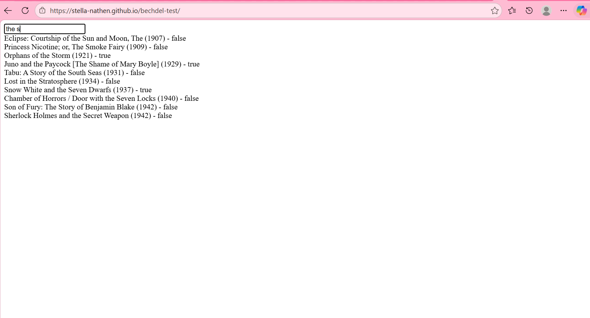
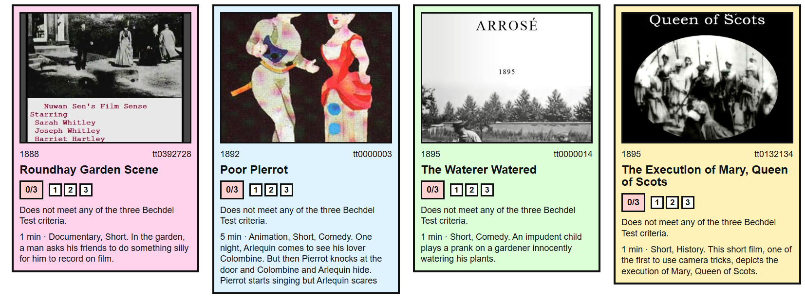
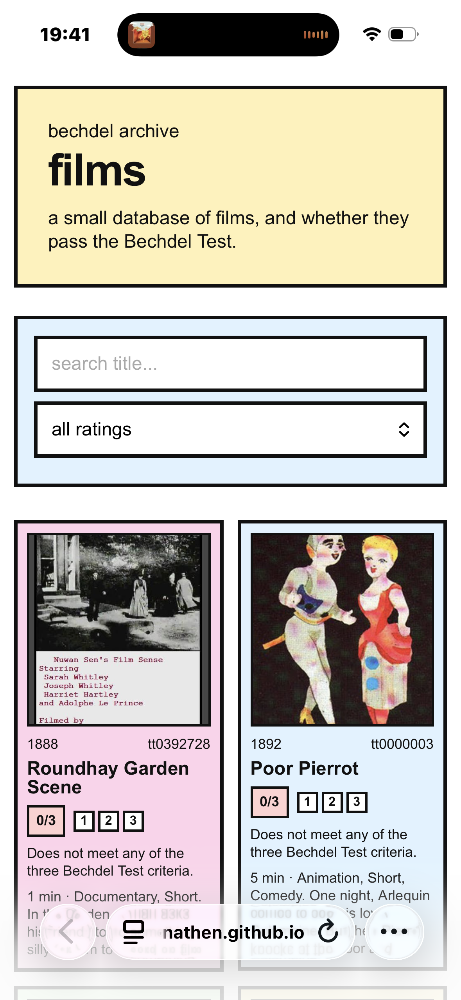
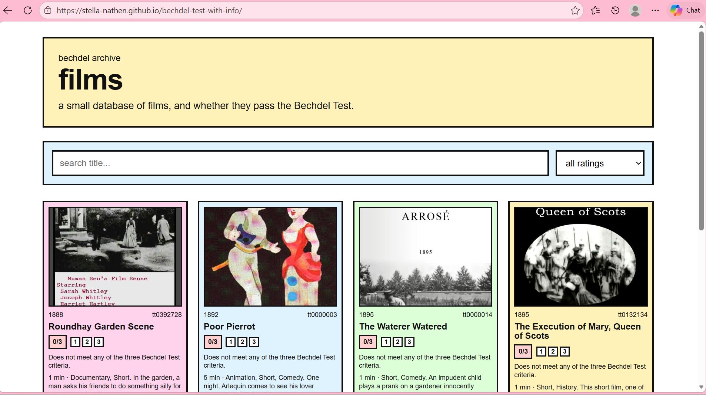

Introduction
This project is a film archive built around the Bechdel Test, which is a simple way of evaluating how women are represented in films. A film passes if it includes at least two named women who talk to each other about something other than a man.
The Bechdel Test is usually treated as a discussion point, but I wanted to turn it into a way of browsing films. Instead of just reading about it, users can filter films based on their Bechdel rating and explore patterns for themselves.
Each film in the site is given a rating from 0 to 3, based on how many of the test’s criteria it meets. This is shown directly on the film cards using labels and visual markers, so the rating is always part of how the film is presented.
- 0 → fails all criteria
- 1 → includes women, but they do not speak to each other
- 2 → women speak, but only about men
- 3 → fully passes the Bechdel Test
I also built a filter system so users can view films by these ratings. This turns the Bechdel Test into a functional part of the website.
This page explains how the project developed, the key features I built, and the technical challenges behind making the site work.
1. The First Version
My first website was initially simple. I was just trying to test how the main idea could work, which was the instant search feature I was most focused on.
At this stage, the website searched through the Bechdel dataset and returned matching films. It only showed basic information (what I had in the bechdel library), like the title, year, and whether the film passed or failed.
films = await fetch("bechdel.json")
.then(res => res.json());what this code is doing
fetch()loads the localbechdel.jsonfile..json()turns the file into usable JavaScript data.- The data gets stored in an array called
films. - That array becomes the library the site searches through.
process note
This was essentially my proof of concept. Before adding posters or API data, I needed to know if I could make the search work instantly from a dataset.
Version 1 website:
open first website ↗
2. What I Used
Core code
The project uses HTML, CSS, and JavaScript.
- HTML: search bar, dropdown, and film grid
- CSS: layout, colors, cards, and phone formatting
- JavaScript: loading data, filtering, rendering, and API calls
Data sources
I used two sources of data. The local Bechdel dataset (which I found as a JSON file as a link online) gave me the ratings, and the IMDb API added the extra film details that made the cards more interesting with photos and information.
const API_BASE = "https://api.imdbapi.dev";
let films = [];
const imdbCache = new Map();code specifics
const API_BASEstores the API link so it can be reused.let films = []starts as an empty array before the JSON loads.new Map()creates a cache so repeated API data can be remembered.- The project is basically local data first then API data second.
3. Instant Search
One of my main goals was to not have a search button. I wanted it to feel more like a film or streaming website, like netflix, where results change as you type.
This made the site more responsive. The user can type, delete, or change the rating filter and the results update without a button or refresh.
searchInput.addEventListener("input", render);
ratingFilter.addEventListener("change", render);code specifics
addEventListener()listens for user actions."input"runs every time someone types in the search bar."change"runs when the dropdown filter changes.- Both events call
render(), which rebuilds the film grid.
This was to immitate a streaming website or really any online film archive.
4. How the Website Works
The website loads in stages instead of doing everything at once. This was important as the local Bechdel data loads quickly, but the API data takes longer.
loadBechdelData();
render();
loadIMDbForCards();code specifics
loadBechdelData()loads the local dataset.render()creates the visible cards.loadIMDbForCards()fetches extra film details.updateCard()replaces loading text with real API data.
Using async functions let me show the structure of the page first, then load the details after. So the user sees something quickly instead of staring at a blank unresponsive page.
5. Search + Filter Logic
The render function is basically the control center. It decides which films are allowed to appear based on the search input and the rating dropdown.
const filteredFilms = films
.filter(film => decodeHTML(film.title)
.toLowerCase()
.includes(search))
.filter(film => filter === "all" || String(film.rating) === filter)
.slice(0, 8);code specifics
.filter()creates a smaller array of matching films..toLowerCase()makes the search case-insensitive..includes(search)checks if the title contains what the user typed.String(film.rating) === filtercompares the film rating to the dropdown value..slice(0, 8)limits the page to eight films at once.
eight?
I originally had more films showing, but that meant more API calls. Eight kept the page readable and stopped the site from asking the API for too much at once.
6. Creating Film Cards
The film cards are not written manually in the HTML. JavaScript creates them from the data, which makes the website more flexible.
Each card starts with placeholder content, like “loading image” and “Loading film details...” Then the API data fills it in later.
function createCard(film, index) {
const card = document.createElement("article");
card.className = "card loading-card";
return card;
}code specifics
document.createElement()creates a new HTML element using JavaScript.card.classNameadds CSS classes to style the card.innerHTMLis used to insert the card layout.- Template literals let me put film data directly inside the card HTML.

7. The API Problem
This was the weirdest hurdle. At first, I thought some films were missing from the API because certain cards would not load properly.
But the real issue was that I was making too many async requests at once. The site was asking for lots of film details too quickly, so some requests failed.
const imdbId = `tt${film.imdbid}`;
const url = `${API_BASE}/titles/${imdbId}`;
const res = await fetch(url);code specifics
- The film’s IMDb ID is used to build the API request.
- Template literals create the URL dynamically.
fetch(url)asks the API for film data.awaitwaits for that specific request to return.- Too many visible cards meant too many requests happening at once.
The bug seemed at first to me like missing film data, but it was actually a request problem.
8. Fixing the API Issue
To fix this, I made the website less api demanding. If a request fails, it waits and tries again instead of giving up immediately.
if (attempt < 3) {
await wait(700 * attempt);
return fetchIMDbData(film, attempt + 1);
}retry logic specifics
attempttracks how many times the request has tried.attempt < 3stops it from retrying forever.wait(700 * attempt)adds a delay before trying again.- The function calls itself again, which is a form of recursion! (my favourite data structure)
I also added fallback logic because the API did not always return image data in the same format. Sometimes images and movie posters were under dif categories in the IMDB database.
const image =
data.primaryImage?.url ||
data.image?.url ||
data.poster ||
null;fallback logic specifics
?.is optional chaining, which prevents errors if data is missing.||checks another option if the first one does not exist.- If no image exists, it returns
nulland the card shows a fallback state.
9. Mobile Formatting
I also wanted to make the site work/fit on phones. The desktop version uses a wider grid, but that would be too cramped on a smaller screen.
@media (max-width: 650px) {
#filmGrid {
grid-template-columns: repeat(2, 1fr);
}
}code specifics
@medialets CSS change based on screen size.- The grid changes from four columns to fewer columns.
- On phones, the controls stack vertically.
- This makes the layout adapt instead of just shrinking awkwardly.

Shows a screenshot of the mobile version. Two cards per row.
10. Final Website
The final version keeps the instant search idea from the first website, but adds a more complete card system and better data handling.
The biggest change is that the site displays more informative data, while filtering as well, and including images and bechdel test information.
- instant search without a button
- rating filter
- dynamic film cards
- posters, plots, genres, and runtime from the API
- async loading and staged updates
- retry logic and fallback data
- responsive layout for phones
Final website:
open final website ↗